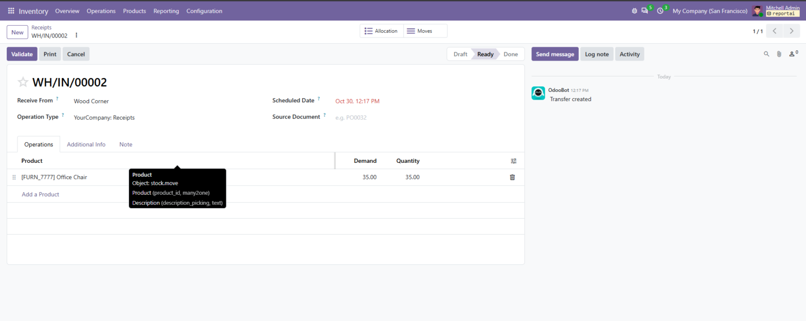
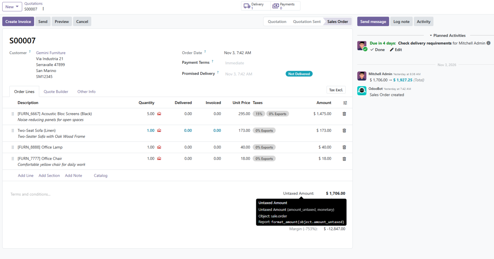

This module brings back tooltips on list column headers, as in Odoo 18, and adds tooltips to the totals of orders and invoices. It is useful for users who want to know what a column means, and for developers who need field names while building views and reports.
Tooltip on a column group, shown in debug mode:

sale_margin is installed.Tooltip on Untaxed Amount, shown in debug mode:

Technical details are for developers, so they only appear in debug mode. Outside debug mode, tooltips stay simple.
format_amount(object.amount_total).There is nothing to configure.